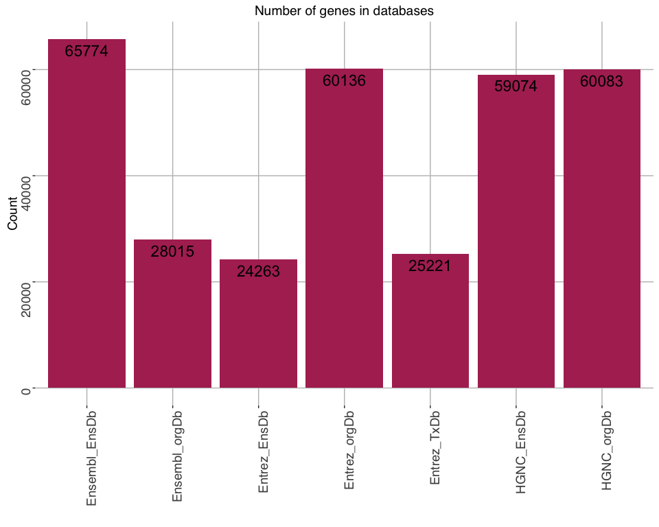
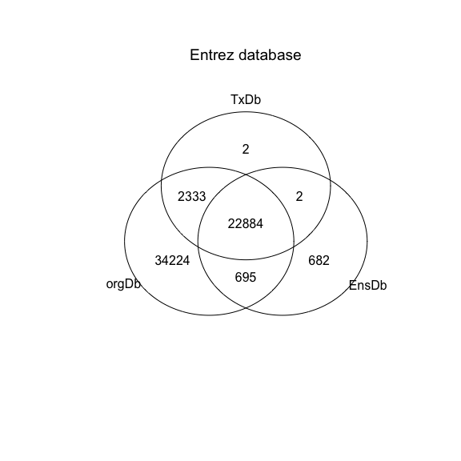
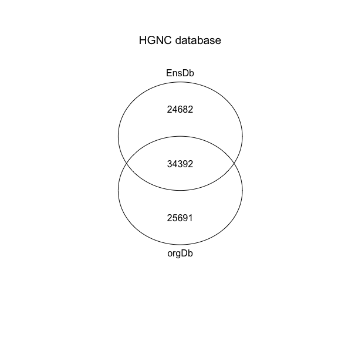
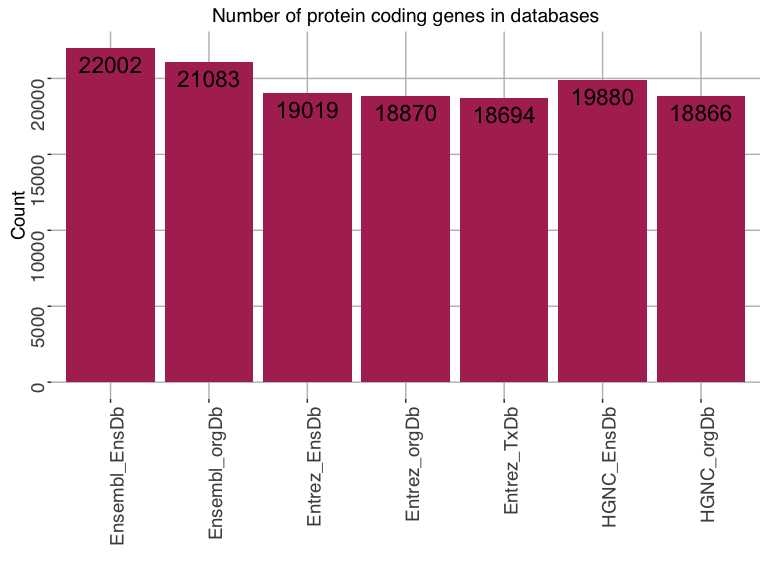
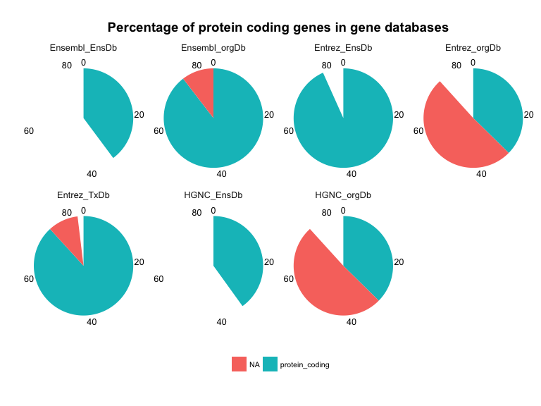
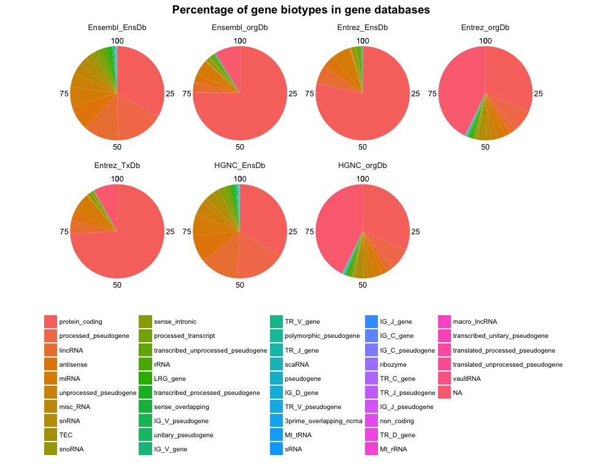

Exploring the human genome - Gene Annotations
When working with any type of genome data, we often look for annotation information about genes, e.g. what’s the gene’s full name, what’s its abbreviated symbol, what ID it has in other databases, what functions have been described, how many and which transcripts exist, etc.
However, when looking for this information we (luckily) find a number of different databases and packages to access their information in R. But with this often comes confusion, because they all vary - sometimes only slightly, other times quite strongly - in how many genes they list and what they consider to be a “gene”.
What exactly is a gene?
The narrow traditional definition of a gene is that it is a hereditary unit of information, which meant that it is a unit of DNA which encodes for the production of a protein. The Human Genome Project has estimated that the human genome comprises 20000 to 25000 genes.
However, if we take the definition of gene more liberally, we could also consider chunks of DNA which code for other functional units, like miRNAs, pseudogenes or other regulatory elements.
AnnotationDbi
The R package AnnotationDbi provides connections to a large number of annotation resources for gene and genome information of many organisms. It can access feature data from a number of gene or genome centric packages.
Here, I want to explore some of these packages and compare the information they contain.
How many genes are there in different databases?
Because genes can have identifiers from many databases (but not necessarily from all and there is not always a one-to-one mapping between them), we compare the number of unique identifiers for Entrez and Ensembl, as well as for gene symbol.
“Entrez Gene is NCBI’s database for gene-specific information. It does not include all known or predicted genes; instead Entrez Gene focuses on the genomes that have been completely sequenced, that have an active research community to contribute gene-specific information, or that are scheduled for intense sequence analysis.” Maglott et al., Nucleic Acids Research 2005
Ensembl is a genome browser but it also includes gene annotations.
Gene symbols represent the official gene name abbreviation from HGNC.
org.Hs.eg.db
The first package I looked at was org.Hs.eg.db, which contains genome wide annotations for the human genome.
library(AnnotationDbi)
library(org.Hs.eg.db)
# We can find out which keys and/or columns can be accessed by running
# keytypes(org.Hs.eg.db) or columns(org.Hs.eg.db)
ENTREZID_org <- keys(org.Hs.eg.db, keytype = "ENTREZID")
ENSEMBL_org <- keys(org.Hs.eg.db, keytype = "ENSEMBL")
HGNC_org <- keys(org.Hs.eg.db, keytype = "SYMBOL")
EnsDb.Hsapiens.v79
EnsDb.Hsapiens.v79 contains annotation information from Ensembl. Here, we also find genes based on Ensembl, Entrez and HGNC IDs.
library(EnsDb.Hsapiens.v79)
# keytypes(EnsDb.Hsapiens.v79)
ENTREZID_EnsDb <- keys(EnsDb.Hsapiens.v79, keytype = "ENTREZID")
ENSEMBL_EnsDb <- keys(EnsDb.Hsapiens.v79, keytype = "GENEID")
HGNC_EnsDb <- keys(EnsDb.Hsapiens.v79, keytype = "SYMBOL")
TxDb.Hsapiens.UCSC.hg38.knownGene
TxDb.Hsapiens.UCSC.hg38.knownGene provides annotation information from UCSC, specifically on transcripts in form of TxDb objects. Here, we only find comparable information on Entrez IDs.
library(TxDb.Hsapiens.UCSC.hg38.knownGene)
# keytypes(TxDb.Hsapiens.UCSC.hg38.knownGene)
ENTREZID_TxDb <- keys(TxDb.Hsapiens.UCSC.hg38.knownGene, keytype = "GENEID")
Comparison of gene numbers from the three databases accessed via the three R packages
# setting my custom theme of choice
library(ggplot2)
my_theme <- function(base_size = 12, base_family = "sans"){
theme_grey(base_size = base_size, base_family = base_family) +
theme(
axis.text = element_text(size = 14, angle = 90, hjust = 1),
axis.title = element_text(size = 14),
panel.grid.major = element_line(colour = "grey"),
panel.grid.minor = element_blank(),
panel.background = element_rect(fill = "white"),
strip.background = element_rect(fill = "cornsilk", color = "maroon", size = 2),
strip.text = element_text(face = "bold", size = 15, colour = "maroon"),
legend.position = "bottom"
)
}
# preparing the gene table for plotting
gene_table <- data.frame(DB = c("Entrez_orgDb", "Ensembl_orgDb", "HGNC_orgDb",
"Entrez_EnsDb", "Ensembl_EnsDb", "HGNC_EnsDb", "Entrez_TxDb"),
no_genes = c(length(unique(ENTREZID_org)), length(unique(ENSEMBL_org)),
length(unique(HGNC_org)), length(unique(ENTREZID_EnsDb)),
length(unique(ENSEMBL_EnsDb)), length(unique(HGNC_EnsDb)),
length(unique(ENTREZID_TxDb))))
p <- ggplot(gene_table, aes(x = factor(DB), y = no_genes, label = no_genes)) +
geom_bar(stat = "identity", fill = "maroon") +
my_theme() +
labs(title = "Number of genes in databases", y = "Count", x = "")
p + geom_text(size = 6, vjust = 1.5)

When we compare the numbers of genes we can obtain from the three databases Ensembl, Entrez and HGNC via three R packages (org.Hs.eg.db, EnsDb.Hsapiens.v79 and TxDb.Hsapiens.UCSC.hg38.knownGene), we see that there are strong differences: There seem to be either around 25000 to 28000 genes or around 60000. The only database with consistent numbers is HGNC. The reason for these divergent numbers could be due to how they classify a “gene”. Everything that is around 25000 could be because they consider protein coding genes only. Will we check if that’s indeed the case in a minute.
Overlap between databases
First, I want to know how well the database information from different packages overlaps. Venn diagrams show us the number of genes overlapping between the three databases.
library(gplots)
venn(list(orgDb = unique(ENTREZID_org), EnsDb = unique(ENTREZID_EnsDb), TxDb = unique(ENTREZID_TxDb)),
show.plot = TRUE, small = 0.7, showSetLogicLabel = FALSE, simplify = TRUE)
mtext("Entrez database", side=3, cex = 1.2)

venn(list(orgDb = unique(ENSEMBL_org), EnsDb = unique(ENSEMBL_EnsDb)),
show.plot = TRUE, small = 0.7, showSetLogicLabel = FALSE, simplify = TRUE)
mtext("Ensembl database", side=3, cex = 1.2)

While there is a reasonably large overlap between packages, there are still many genes which are either in one or the other package.
For gene names this is worst, but it might be due to changing names of genes (one gene often has several symbols which can be used, the preferred one often changing with new knowledge about the gene’s function).
For Ensembl and Entrez it seems like one of the databases simply contains more gene entries than the other(s), while the majority of genes from the smaller database are included.
Gene biotypes
Gene biotype annotation tells us the general category of a gene. The biggest category is protein coding genes. They allow us to check whether the genes in different databases and package consider different categories as “genes”.
Gene biotype information is only available for genes in EnsemblDb! Thus, the classification of genes in the other packages is biased in that only genes in EnsemblDb could be considered.
# gene dataframe for org.Hs.eg.db
gene_dataframe_orgDb <- AnnotationDbi::select(org.Hs.eg.db, keys=ENTREZID_org, columns=c("ENSEMBL", "SYMBOL"), keytype="ENTREZID")
colnames(gene_dataframe_orgDb) <- c("Entrez", "Ensembl", "HGNC")
colnames(gene_dataframe_orgDb) <- paste(colnames(gene_dataframe_orgDb), "orgDb", sep = "_")
# additional column with HGNC added for merging
gene_dataframe_orgDb$HGNC <- gene_dataframe_orgDb$HGNC_orgDb
# gene dataframe for EnsDb.Hsapiens.v79
gene_dataframe_EnsDb <- ensembldb::select(EnsDb.Hsapiens.v79, keys=ENSEMBL_EnsDb,
columns=c("ENTREZID", "SYMBOL", "GENEBIOTYPE"), keytype="GENEID")
colnames(gene_dataframe_EnsDb) <- c("Ensembl", "Entrez", "HGNC", "GENEBIOTYPE")
colnames(gene_dataframe_EnsDb) <- paste(colnames(gene_dataframe_EnsDb), "EnsDb", sep = "_")
# additional column with HGNC added for merging & keeping one copy of it in the merged dataframe
gene_dataframe_EnsDb$HGNC <- gene_dataframe_EnsDb$HGNC_EnsDb
# merging the two dataframes by HGNC
library(dplyr)
gene_dataframe <- full_join(gene_dataframe_EnsDb, gene_dataframe_orgDb, by = "HGNC")
gene_dataframe <- gene_dataframe[, -5]
# making a dataframe with additional column for merging & keeping one copy in the merged dataframe
ENTREZID_TxDb_df <- data.frame(ENTREZID = as.character(ENTREZID_TxDb), Entrez_TxDb = ENTREZID_TxDb)
gene_dataframe <- left_join(gene_dataframe, ENTREZID_TxDb_df, by = c("Entrez_orgDb" = "ENTREZID"))
# calculating percentages of gene biotypes
for (i in 1:length(colnames(gene_dataframe))){
key = colnames(gene_dataframe)[i]
# remove duplicate and NA plots
gene_dataframe_subs <- gene_dataframe[!duplicated(gene_dataframe[, key]), c(key, "GENEBIOTYPE_EnsDb")]
gene_dataframe_subs <- gene_dataframe_subs[!is.na(gene_dataframe_subs[, key]), ]
cat("\nKey:", key, "has", nrow(gene_dataframe_subs), "unique rows without NAs.\nOf these,",
sum(is.na(gene_dataframe_subs$GENEBIOTYPE_EnsDb)), "don't have a gene biotype annotation\n")
if (i == 1){
genebiotypes_table <- as.data.frame(table(gene_dataframe_subs$GENEBIOTYPE_EnsDb))
genebiotypes_table <- rbind(genebiotypes_table,
data.frame(Var1 = "NA",
Freq = sum(is.na(gene_dataframe_subs$GENEBIOTYPE_EnsDb))))
genebiotypes_table$percent <- round(genebiotypes_table$Freq /
sum(genebiotypes_table$Freq) * 100, digits = 4)
} else {
genebiotypes_table_pre <- as.data.frame(table(gene_dataframe_subs$GENEBIOTYPE_EnsDb))
genebiotypes_table_pre <- rbind(genebiotypes_table_pre,
data.frame(Var1 = "NA",
Freq = sum(is.na(gene_dataframe_subs$GENEBIOTYPE_EnsDb))))
genebiotypes_table_pre$percent <- round(genebiotypes_table_pre$Freq /
sum(genebiotypes_table_pre$Freq) * 100, digits = 4)
genebiotypes_table <- full_join(genebiotypes_table, genebiotypes_table_pre, by = "Var1")
}
}
##
## Key: Ensembl_EnsDb has 65774 unique rows without NAs.
## Of these, 0 don't have a gene biotype annotation
##
## Key: Entrez_EnsDb has 24263 unique rows without NAs.
## Of these, 0 don't have a gene biotype annotation
##
## Key: HGNC_EnsDb has 59074 unique rows without NAs.
## Of these, 0 don't have a gene biotype annotation
##
## Key: Entrez_orgDb has 60136 unique rows without NAs.
## Of these, 25740 don't have a gene biotype annotation
##
## Key: Ensembl_orgDb has 28015 unique rows without NAs.
## Of these, 2456 don't have a gene biotype annotation
##
## Key: HGNC_orgDb has 60083 unique rows without NAs.
## Of these, 25691 don't have a gene biotype annotation
##
## Key: Entrez_TxDb has 25217 unique rows without NAs.
## Of these, 2087 don't have a gene biotype annotation
# create unique colnames
colnames(genebiotypes_table) <- make.unique(c("Key", rep(colnames(gene_dataframe), each = 2)))
genebiotypes_table <- genebiotypes_table[, -c(8, 9)]
# order by percentage of Ensembl EnsDb
genebiotypes_table <- genebiotypes_table[order(genebiotypes_table$Ensembl_EnsDb.1, decreasing = TRUE), ]
How many protein coding genes are in each database and annotation package?
Ensembl IDs from EnsDb.Hsapiens.v79 have the most protein coding genes, which is consistent with also having the highest number of annotations in general. The number of protein coding genes in the other databases/ packages is only slightly lower, however and fits well with the predicted 20000 to 25000.
genebiotypes_table_protein_coding <- genebiotypes_table[
which(genebiotypes_table$Key %in% c("protein_coding", "NA")), ]
genebiotypes_table_count <- genebiotypes_table_protein_coding[1, c(1, grep(".1", colnames(genebiotypes_table_protein_coding)) - 1)]
library(tidyr)
genebiotypes_table_gather <- genebiotypes_table_count %>%
gather(Key, Count, Ensembl_EnsDb:Entrez_TxDb)
colnames(genebiotypes_table_gather)[2] <- "DB"
# plot
bp <- ggplot(genebiotypes_table_gather[, -1], aes(x = factor(DB), y = Count, label = Count)) +
geom_bar(stat = "identity", fill = "maroon") + my_theme()
bp + labs(title = "Number of protein coding genes in databases", y = "Count", x = "") +
geom_text(size = 6, vjust = 1.5)

When looking at the percentage of protein coding genes among all gene annotations we can confirm that the database/ package combinations with lower gene numbers (Ensembl org.Db, Entrez EnsDb and Entrez TxDb) are mainly comprised of protein coding genes while databases/ packages with around 60000 gene entries consider other functional units as well.
genebiotypes_table_percent <- genebiotypes_table_protein_coding[, c(1, grep(".1", colnames(genebiotypes_table_protein_coding)))]
library(tidyr)
genebiotypes_table_gather <- genebiotypes_table_percent %>%
gather(Key, Percent, Ensembl_EnsDb.1:Entrez_TxDb.1)
colnames(genebiotypes_table_gather)[2] <- "DB"
genebiotypes_table_gather$DB <- gsub(".1", "", genebiotypes_table_gather$DB)
# plot
bp <- ggplot(genebiotypes_table_gather, aes(x = "", y = Percent, fill = Key)) +
geom_bar(width = 1, stat = "identity") + theme_minimal()
pie <- bp + coord_polar("y", start = 0) +
ggtitle("Percentage of protein coding genes in gene databases") +
theme(
axis.title.x = element_blank(),
axis.title.y = element_blank(),
panel.border = element_blank(),
panel.grid = element_blank(),
axis.ticks = element_blank(),
plot.title = element_text(size = 14, face = "bold"),
legend.title = element_blank(),
legend.position = "bottom",
legend.text = element_text(size = 8)
)
pie + facet_wrap(~DB, ncol = 4)

Percentages of gene biotypes
What are these other biotypes that most databases/ packages consider as genes? The second largest group following protein coding genes are processed pseudogenes, then come lincRNAs and other small RNAs.
genebiotypes_table_percent <- genebiotypes_table[, c(1, grep(".1", colnames(genebiotypes_table)))]
genebiotypes_table_percent$Key <- factor(genebiotypes_table_percent$Key,
levels = paste0(genebiotypes_table_percent$Key))
# gather dataframe for plotting
library(tidyr)
genebiotypes_table_gather <- genebiotypes_table_percent %>%
gather(Key, Percent, Ensembl_EnsDb.1:Entrez_TxDb.1)
colnames(genebiotypes_table_gather)[2] <- "DB"
genebiotypes_table_gather$DB <- gsub(".1", "", genebiotypes_table_gather$DB)
# plot
bp <- ggplot(genebiotypes_table_gather, aes(x = "", y = Percent, fill = Key)) +
geom_bar(width = 1, stat = "identity") + theme_minimal()
pie <- bp + coord_polar("y", start = 0) +
ggtitle("Percentage of gene biotypes in gene databases") +
theme(
axis.title.x = element_blank(),
axis.title.y = element_blank(),
panel.border = element_blank(),
panel.grid = element_blank(),
axis.ticks = element_blank(),
plot.title = element_text(size = 14, face = "bold"),
legend.title = element_blank(),
legend.position = "bottom",
legend.text = element_text(size = 8)
)
pie + facet_wrap(~DB, ncol = 4)

What does this mean for genetics and genomics research?
Overall, Ensembl gene annotations from EnsDb.Hsapiens.v79 have the largest number of gene annotations.
However, this comparison shows that it can be critical for identifying genes and annotating them correctly in your analyses to consider the strengths and weaknesses of the different databases and packages you use to access the information. I believe it is well worthwhile the time and effort to consider what information a database can or cannot give you before using it on your data.
In a part 2 I am looking at transcripts.
sessionInfo()
## R version 3.3.1 (2016-06-21)
## Platform: x86_64-apple-darwin13.4.0 (64-bit)
## Running under: OS X 10.12 (Sierra)
##
## locale:
## [1] de_DE.UTF-8/de_DE.UTF-8/de_DE.UTF-8/C/de_DE.UTF-8/de_DE.UTF-8
##
## attached base packages:
## [1] parallel stats4 stats graphics grDevices utils datasets
## [8] methods base
##
## other attached packages:
## [1] tidyr_0.6.0
## [2] dplyr_0.5.0
## [3] gplots_3.0.1
## [4] ggplot2_2.1.0
## [5] TxDb.Hsapiens.UCSC.hg38.knownGene_3.4.0
## [6] EnsDb.Hsapiens.v79_1.1.0
## [7] ensembldb_1.6.0
## [8] GenomicFeatures_1.26.0
## [9] GenomicRanges_1.26.0
## [10] GenomeInfoDb_1.10.0
## [11] org.Hs.eg.db_3.4.0
## [12] AnnotationDbi_1.36.0
## [13] IRanges_2.8.0
## [14] S4Vectors_0.12.0
## [15] Biobase_2.34.0
## [16] BiocGenerics_0.20.0
##
## loaded via a namespace (and not attached):
## [1] SummarizedExperiment_1.4.0 gtools_3.5.0
## [3] lattice_0.20-34 colorspace_1.2-7
## [5] htmltools_0.3.5 rtracklayer_1.34.0
## [7] yaml_2.1.13 interactiveDisplayBase_1.12.0
## [9] XML_3.98-1.4 DBI_0.5-1
## [11] BiocParallel_1.8.0 plyr_1.8.4
## [13] stringr_1.1.0 zlibbioc_1.20.0
## [15] Biostrings_2.42.0 munsell_0.4.3
## [17] gtable_0.2.0 caTools_1.17.1
## [19] evaluate_0.10 labeling_0.3
## [21] knitr_1.14 biomaRt_2.30.0
## [23] httpuv_1.3.3 BiocInstaller_1.24.0
## [25] Rcpp_0.12.7 KernSmooth_2.23-15
## [27] xtable_1.8-2 scales_0.4.0
## [29] formatR_1.4 gdata_2.17.0
## [31] XVector_0.14.0 mime_0.5
## [33] Rsamtools_1.26.0 AnnotationHub_2.6.0
## [35] digest_0.6.10 stringi_1.1.2
## [37] shiny_0.14.1 grid_3.3.1
## [39] tools_3.3.1 bitops_1.0-6
## [41] magrittr_1.5 lazyeval_0.2.0
## [43] RCurl_1.95-4.8 tibble_1.2
## [45] RSQLite_1.0.0 Matrix_1.2-7.1
## [47] assertthat_0.1 rmarkdown_1.1
## [49] httr_1.2.1 R6_2.2.0
## [51] GenomicAlignments_1.10.0
##